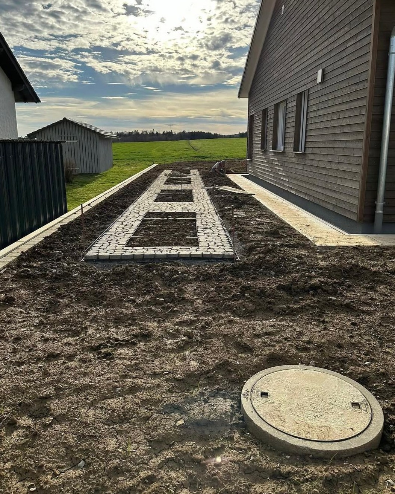
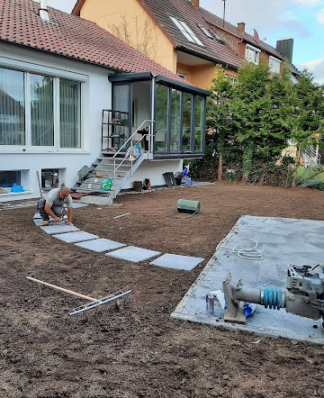
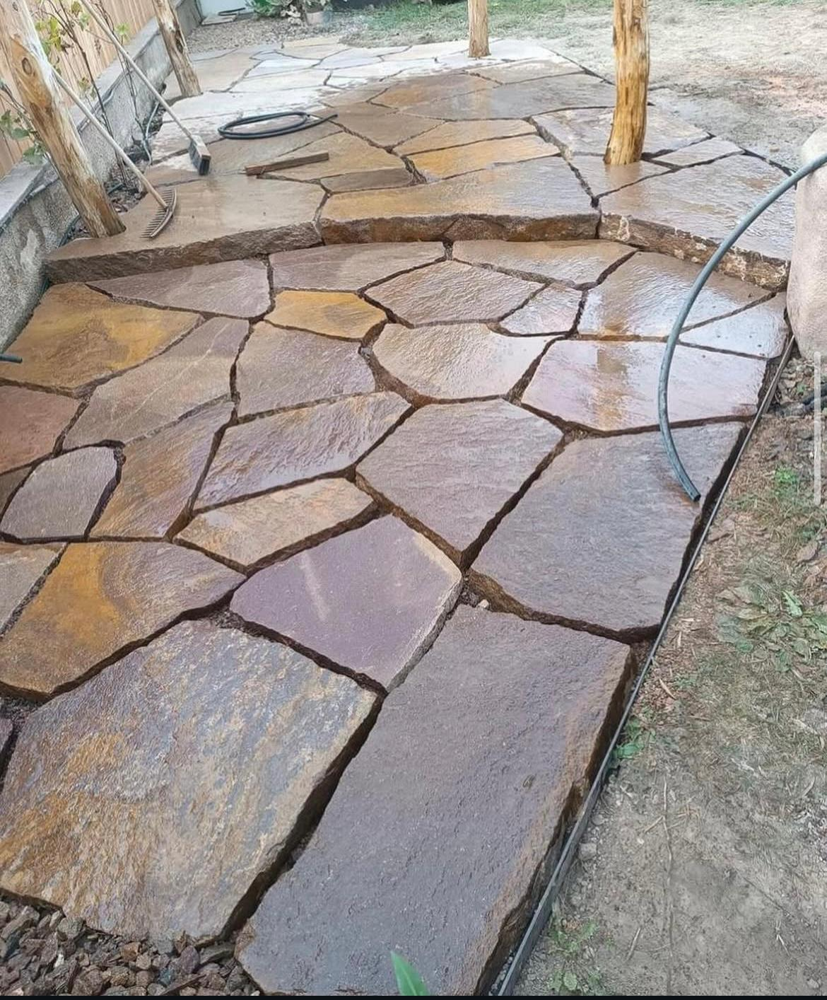
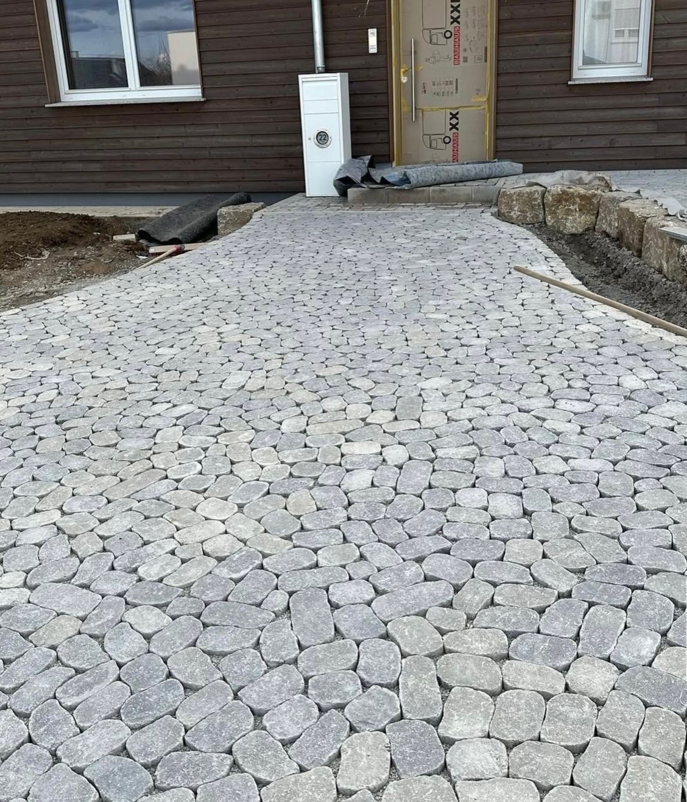
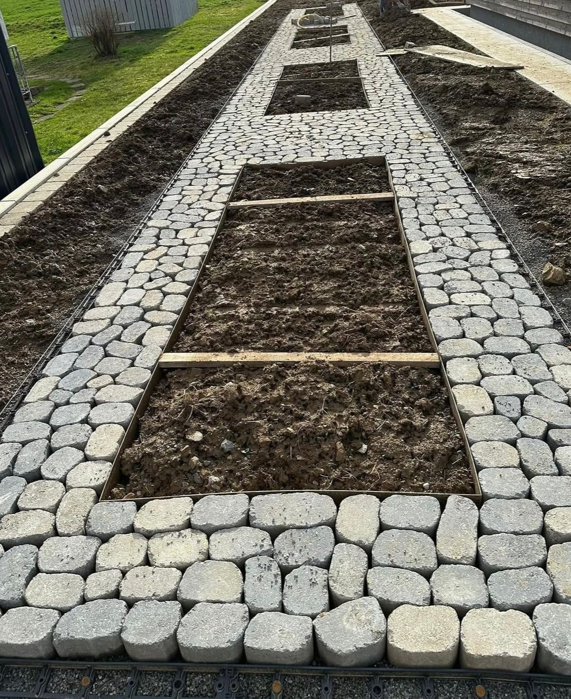
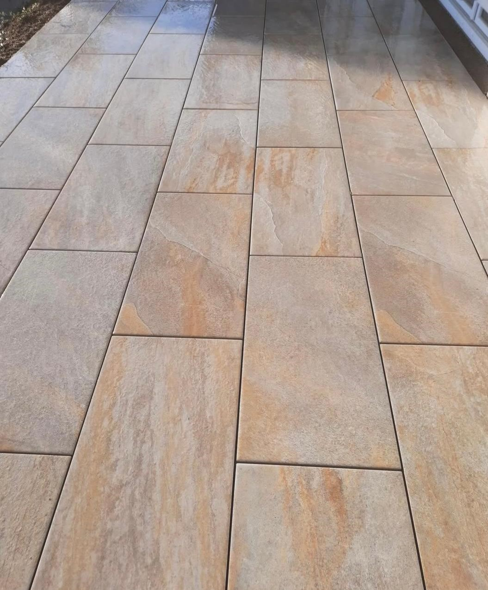
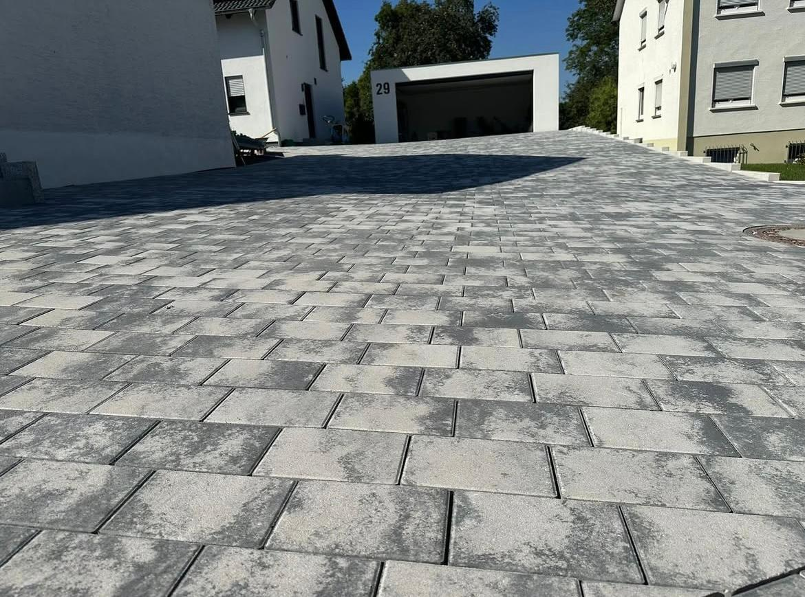
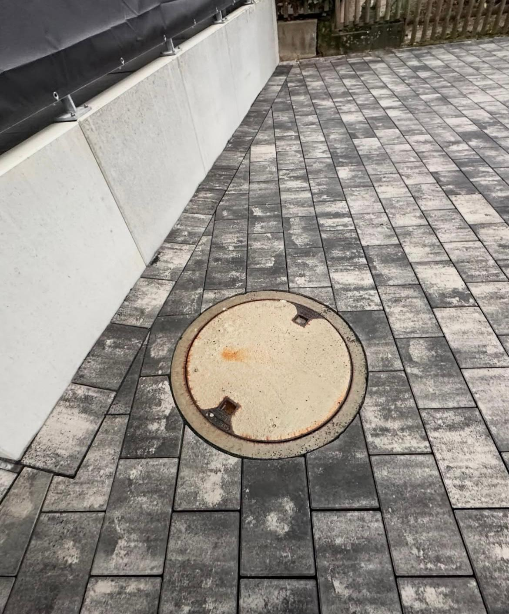

Was unterscheidet ein Haus von einem Zuhause? Ein sicherer Ort für Entspannung, Aktivität und Kreativität – eine echte Wohlfühloase. „Zuhause“ bedeutet für jeden etwas anderes. Lassen Sie uns Ihrer Umgebung mehr Persönlichkeit geben!
Wir bieten maßgeschneiderte Gartengestaltungen an, von bepflanzten Beeten bis zu Natursteinwegen. Jeder Garten wird individuell geplant, damit Sie Ihren persönlichen Rückzugsort genießen können.

Gemeinsam entwickeln wir individuelle Lösungen für Ihren Außenbereich. Von der Planung bis zur Umsetzung stehen Qualität, Ästhetik und Langlebigkeit im Mittelpunkt.
Unser Team begleitet Sie Schritt für Schritt: Beratung, Planung, Materialauswahl und fachgerechte Umsetzung. Wir setzen Ihre Wünsche zuverlässig um.

Hochwertige Natursteine verleihen Ihrem Außenbereich eine zeitlose und edle Optik. Individuell angepasst an Ihre Wünsche.
Wir beraten Sie bei der Auswahl der Steinsorten, Oberflächen und Verlegemuster, sodass Ihre Terrasse ein echtes Highlight wird.

Harmonische Wege verbinden Design mit Funktionalität. Wir planen langlebige und ästhetische Lösungen.
Ob Naturstein, Pflaster oder dekorative Kieswege – wir gestalten Ihren Gartenweg passend zu Haus und Gartenstil.

Klare Linien, hochwertige Materialien und durchdachte Planung – für einen Garten, der begeistert.
Minimalistische Designs, nachhaltige Materialien und kreative Ideen lassen Ihren Garten modern, elegant und pflegeleicht wirken.

Ihre Terrasse wird zum Mittelpunkt Ihres Zuhauses – individuell gestaltet und langlebig umgesetzt.
Wir berücksichtigen Sonnenstand, Sichtschutz, Materialien und Form, damit Ihre Terrasse perfekt zu Ihrem Zuhause passt.

Kreative Gestaltungskonzepte für Einfahrten, Höfe und Gärten.
Wir planen und gestalten Einfahrten, Zäune, Beleuchtung und Pflanzungen harmonisch für ein stimmiges Gesamtbild.

Perfekt zugeschnittene Pflastersteine sorgen für ein harmonisches Gesamtbild – selbst bei anspruchsvollen Elementen wie Gullideckeln.
Unsere Arbeit zeichnet sich durch millimetergenaue Schnitte und höchste Präzision aus. Auch runde Elemente wie Gullideckel werden sauber und passgenau in das Pflaster integriert. So entsteht ein gleichmäßiges, professionelles Gesamtbild ohne unsaubere Kanten oder Lücken.